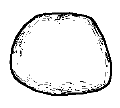
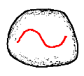
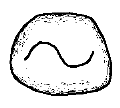
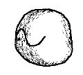
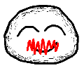
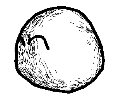

[1.Camera]
[2.Create]
[3.Paint]
[4.Extrude]
[5.Cut]
[6.Smooth]
[7.Bend]
[8.File]
Step 3: Painting and Erasing
1
2
3
4
1) Create an object.
2) Draw a stroke within the object by left-button dragging.
(Be careful not to connect the start and end point of the stroke.)
3) The stroke is painted on the object surface.
4) Rotate the model and see the chages.
5
6
7
8
5-7) Scribbling on the stroke erases it.
(Scribbling stroke should be very condensed.)
8) Rotate the model and see the changes.
When you have practiced enough, go to
step 4.
If the program works strangely, close the applet window and
restart the applet.
Copyright (C) 1998
Takeo Igarashi